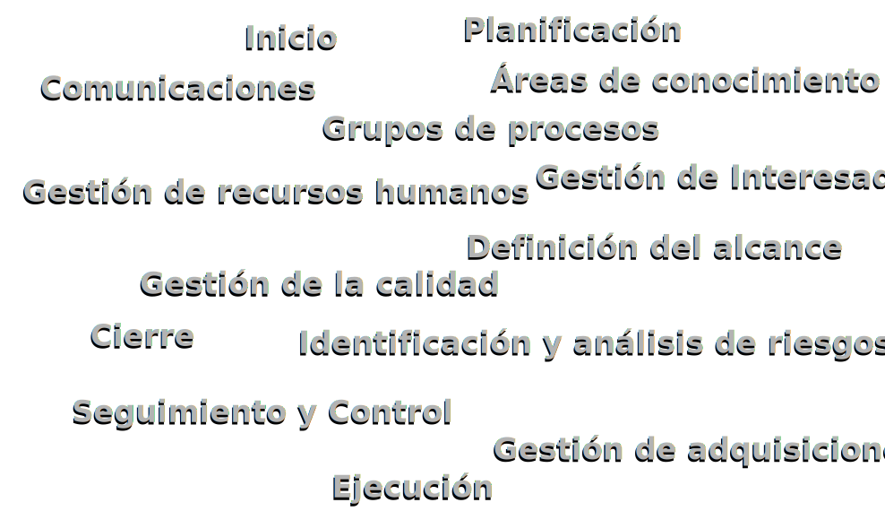

Curso sobre Dirección de Proyectos para ONG's
Introducción
Valencia, 29 de Mayo de 2014
Quién
Pedro-Juan Ferrer
- Cartógrafo y Geodesta
- Excecutive Master PM
- PM en Omnium IE
- PMP y Miembro del PMI/PMI-VC
|
José Mª Toribio
- Psicólogo
- Coordinador de Psicólogos sin Fronteras
- ex vocal de CVONGDs
|
Qué
- Curso (hasta 16h)
- Orientado a ONGs
- Materiales de partida del PMI-Mumbai Chapter
- Adaptado a intereses de CVONGDs
- Conceptos de PM del PMI
- Adaptados a la 5ª Ed del PMBOK
Conceptos de PM del PMI

PM para ONGs
- Planificación y Cierre
- Gestión Recursos Humanos
Cuando
- Viernes 4 y Sábado 5 de Julio
- Viernes 11 y Sábado 12 de Julio
Por qué
- Detectada necesidad de formación
- Traducción de material interesante para el PMI
- Posibilidad de abrir contactos entre organizaciones
- Si se aprueba por los PDUs :)
Estado actual
- 100% traducido
- Comenzada la adaptación
- Falta aprobación del PMI/PMI-VC
- Falta aprobación del CVONGDs